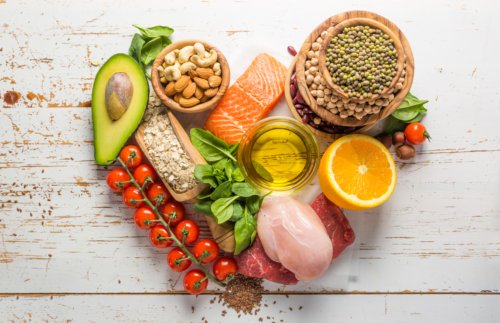

Nemojte pušiti, niti koristiti duvan
Pušenje ili upotreba duvana je jedan od najznačajnijih faktora rizika za razvoj srčanih bolesti. Hemijske supstance koje se nalaze u duvanu mogu da oštete srce i krvne sudove, što dovodi do sužavanja arterija (ateroskleroza). Ateroskleroza može, u krajnjoj liniji, da dovede do srčanog udara. Kada je u pitanju prevencija srčanih oboljenja, nijedna količina pušenja nije bezbedna.
Duvan bez dima i cigarete sa niskim koncentracijama katrana i nikotina takođe predstavljaju rizik, kao i izloženost duvanskom dimu. Osim toga, nikotin iz duvanskog dima otežava rad srca tako što sužava krvne sudove, ubrzava otkucaje srca i povećava krvni pritisak. Ugljen-monoksid iz duvanskog dima zamenjuje deo kiseonika iz krvi. To povećava krvni pritisak zato što prisiljava srce da radi više kako bi snabdelo organizam sa dovoljnom količinom kiseonika.
Čak i takozvano “pušenje u društvu” — pušenje samo kada ste u kafiću ili restoranu sa prijateljima — predstavlja opasnost i povećava rizik od oboljenja srca. Dobra vest je, međutim, ta što kada prestanete da pušite, rizik od srčanih oboljenja drastično opada u roku od godinu dana.
I nije važno koliko dugo i koliko puno ste pušili, počećete da dobijate nagrade čim prestanete.

Vežbajte 30 minuta tokom većine dana u nedelji
Redovne dnevne vežbe mogu da smanje rizik od bolesti srca sa fatalnim ishodom. Kada kombinujete fizičku aktivnost sa drugim merama promene načina života, kao što je održavanje zdrave telesne težine, isplati se još više. Fizička aktivnost pomaže u kontroli telesne težine i smanjuje verovatnoću razvoja drugih stanja koja mogu da opterete rad srca, kao što je visoki krvni pritisak, visok holesterol i dijabetes. Ona smanjuje i stres, koji može biti važan činilac kod srčanih bolesti.
Probajte da tokom većine dana u nedelji imate najmanje 30 do 60 minuta fizičke aktivnosti umerenog intenziteta. Međutim, čak i kraće vežbanje ima korisna dejstva na srce, tako da čak iako ne možete da ispunite ove preporuke, nemojte odustajati. Možete i da podelite vreme vežbanja na periode od po 10 minuta. Imajte na umu da se aktivnosti kao što su održavanje bašte, održavanje kuće, penjanje uz stepenice i šetanje psa ubrajaju u ukupno vreme vežbanja.
Ne morate naporno da vežbate da biste došli do korisnih dejstava, ali veća korist se postiže povećanjem intenziteta, trajanja i učestalosti treninga.
Jedite hranu koja je zdrava za srce
Ako se hranite po specijalnoj dijeti koja se zove Pristupi zaustavljanju hipertenzije ishranom (engl. Dietary Approaches to Stop Hypertension – DASH), možete zaštiti srce. Praćenje DASH režima ishrane znači da se unosi hrana koja ima malo masti, holesterola i soli. Ova dijeta je bogata voćem, povrćem, žitaricama celog zrna i mlečnim proizvodima sa niskim procentom masti, koje mogu da pomognu u zaštiti srca. Pasulj, drugi izvori proteina sa malim sadržajem masti i određene vrste ribe, takođe mogu da smanje rizik od oboljenja srca.Važno je i ograničavanje određenih masti.
Od sledećih vrsta masti — zasićene, polinezasićene, mononezasićene i trans masti — zasićene masti i trans masti povećavaju rizik od koronarne bolesti tako što povećavaju nivo holesterola u krvi. Međutim, ishrana koja je zdrava za srce ne podrazumeva uzdržavanje od hrane. Većina osoba samo mora da doda više voća i povrća u ishranu — sa ciljem da dnevno jedu pet do 10 porcija. Unos velike količine voća i povrća ne pomaže samo kod prevencije srčanih bolesti, već može da pomogne i u prevenciji karcinoma.
Postoji i potpuno prirodan dodatak ishrani koji reguliše nivo holesterola u krvi, zasnovan na principima istočnjačke medicine i proizveden po japanskoj tehnologiji.
Holesterol-Ex Complex sadrži crveni fermentisani pirinač, koji je poznat po svom dejstvu snižavanja holesterola, ali što je jos bitnije, sadrži i nešto potpuno novo na našim prostorima, a davno poznato na dalekom istoku, glukane iz crne zobi, čije dejstvo na snižavanje nivoa holesterola pokazuje neverovatno dobre rezultate.
Održavajte zdravu telesnu težinu
Pošto se gojite u odraslom dobu, porast telesne težine predstavlja uglavnom masti, a ne mišiće. Ova prekomerna težina može da dovede do stanja koja povećavaju verovatnoću pojave srčanih bolesti — visok krvni pritisak, visok holesterol i dijabetes.
Jedan od načina da proverite da li imate zdravu telesnu težinu je da izračunate indeks telesne mase (engl. body mass index – BMI), koji u obzir uzima vašu visinu i težinu prilikom određivanja da li imate zdrav ili nezdrav procenat masnoće u telu.
BMI rezultat od 25 i veći povezan je sa većom koncentracijom masnoća u krvi, višim krvnim pritiskom i povećanim rizikom od oboljenja srca i moždanog udara. BMI predstavlja dobru, ali ne i dovoljnu smernicu. Mišići su teži od masti, na primer, tako da žene i muškarci koji su veoma mišićavi i fizički spremni mogu da imaju veće BMI vrednosti bez dodatnih rizika po zdravlje.
Redovno idite na lekarske preglede
Visok krvni pritisak i visok holesterol mogu da oštete srce i krvne sudove, ali bez kontrole, verovatno nećete ni znati da li imate ova oboljenja ili ne. Redovnim pregledima možete da pratite svoje stanje i da znate da li i kada treba da preduzmete neke mere.
Besplatno savetovalište o zdravlju
Dodatne informacije, iskustva sa pacijentima i savete vezane za zdravlje, lekove i dodatke ishrani možete dobiti pozivom besplatnog savetovališta na broj telefona 011/398-77-47.
Na pozive odgovaraju stručnjaci iz oblasti medicine i farmacije.
Savetovalište radi od 9h-17h svakog radnog dana, po principu kol centra i pozivi se ne naplaćuju dodatno.